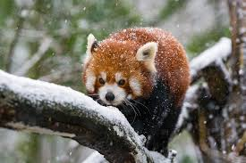
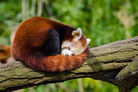
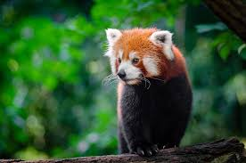
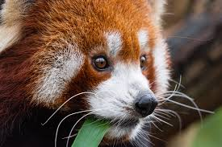

Fast Facts
- The number of Red Pandas left on the planet is estimated to be less then 10,000.
- Red pandas share a gene with the more common black and white panda which allows them to grab bamboo. This gene helps them survive by making it easier for them to get food to eat!
- Bamboo makes up about 90% of a red panda's diet! Other common foods they might find and eat in the wild include some fruits, nuts, and roots too.
- Although the Red Panda is part of the carnivorous order, it is actually not a carnivore, but rather an herbivore.
- The distinct color of the Red panda's fur allows it to camouflage well with fir trees to hide from predators.
- Red pandas make a twittering noise that sounds similar to a bird.
What is a Red Panda?
At first, red pandas were deemed a member of the raccoon family, Procyonidae.
Yet, very recently they were given their own family. Red pandas are the only known
species in the Ailurus family. They can be easily spotted with their rusty
red color, round heads, and distinct pointy ears. Another prominent feature of the
red panda is the fuzzy tail, which is marked by red and bluff rings. The white
circles around their eyes and much of their face make it easier to see their features.
The red panda uses scent to mark locations and also is a very skilled climber.
Red pandas are a distinct species with lots of special features.





Conservation
Red pandas are classified as an endangered species and are protected in China, India, Bhutan, Nepal, and many other countries. Research shows that the population of Red Pandas in the world has declined almost 50% in the last 20 years. It is very important to conserve the land and resources for these animals in order for their species to be conserved. Loss of habitat for Red Pandas generally results from logging and human encroaching. Also on the rise, poaching and illegal trade has caused the population of Red Pandas to decline. Combined with changing climate and the possibility of natural disaster, the threat for the extinction of Red Pandas is on the rise. The International Union for Conservation of Nature is working to conserve the habitat and food source for Red Pandas as well as making a constant effort to increase awareness.